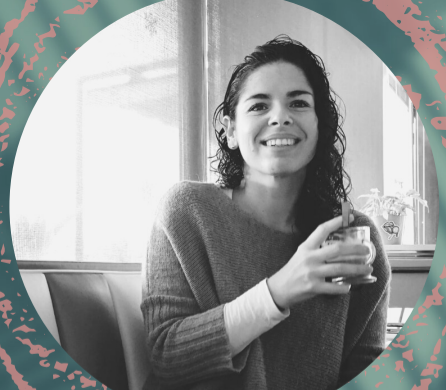

Comunicador Social
Susan Uva

Contact
Education
- Journalism bachelor degree
specialised in corporate
communication 2000-2004
Barcelona, VenezuelaUniversidad Santa María
- Post Degree in Photography
Advertising 2012 - 2013 IDEP
Barcelona, Spain
- Full stack Developer - Neoland
Work Experience
People Operation Cordinator,
-
- Designing People Operations Team Corporate
Identity
- Developing and writing the content for Social Media
- Planning and developing events (Onsites, public
holidays and anniversaries)
Office Manager at Blackwood seven,
-
- Planning and organisation of monthly events
Developing of internal communications
Branding
- Developing and updating
the content on our social media (LinkedIn and
Facebook
- Management of "talent community"
Skills
- Social Media content
- Creative Writing
- Internal Communications
- Events
- Digital Photography
- Employer Branding